The blog
Practical guides to email, CRM and automation.
30 step-by-step articles written from real client builds: what to set up, how to set it up and the mistakes to avoid. No fluff, no jargon.
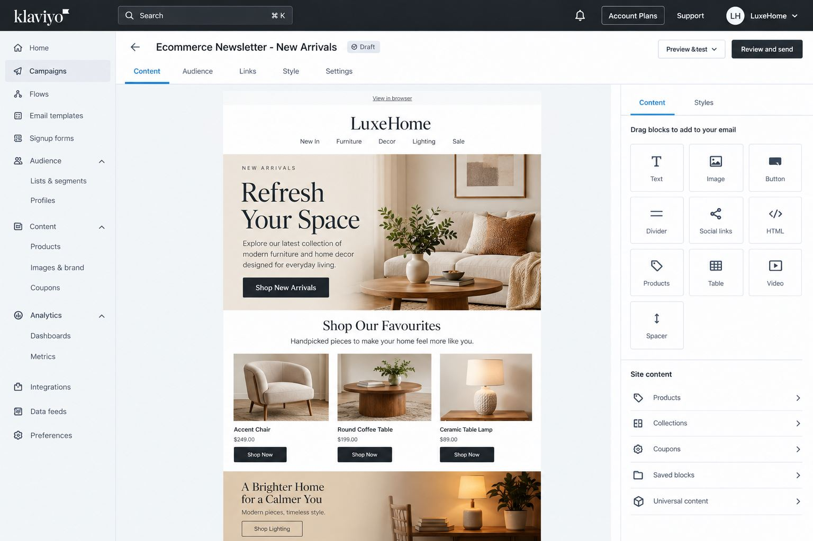
Latest · E-commerce emailThe 6 Klaviyo flows every e-commerce store needs (and how to set them up)
Welcome, abandoned checkout, browse abandonment, post-purchase, win-back and sunset: what each flow does, the timing that works and the mistakes that cost sales.
Read the articleAbandoned cart emails: timing, copy and design that win back sales
How to structure an abandoned cart sequence that recovers revenue without training customers to wait for discounts, with timing, subject lines and design tips.
Read article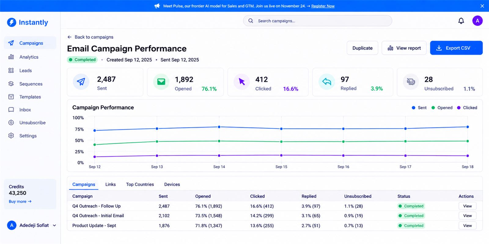
DeliverabilitySPF, DKIM and DMARC explained: the email deliverability checklist
The three DNS records that decide whether your emails reach the inbox, what Gmail, Yahoo and Outlook expect, and the list habits that keep you there.
Read article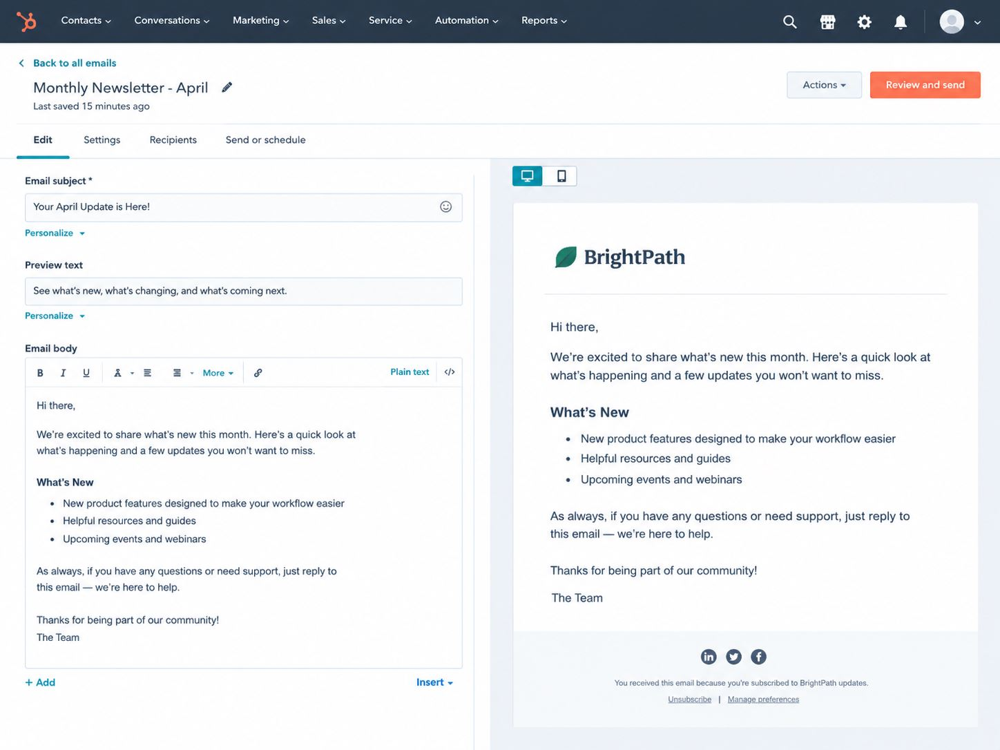
Email marketingHow to write a welcome email series that turns subscribers into customers
A practical welcome series blueprint: how many emails to send, what each one should say, when to send them and how to measure success.
Read article CRM
CRMHubSpot vs GoHighLevel: which CRM fits a small B2B business or agency?
An honest comparison of features, pricing models, automation and who each platform suits best.
Read article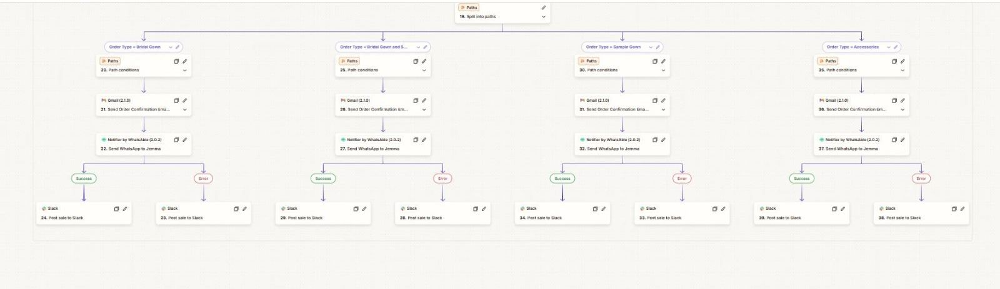
E-commerce emailThe post-purchase email flow: reduce refunds and win the second order
What to send after someone buys, from thank-you to review request to replenishment, and how to time it so customers come back.
Read article CRM
CRMThe CRM migration checklist: switch platforms without losing data
A 10-step plan for moving contacts, deals and automations, with the reconciliation step most teams skip.
Read article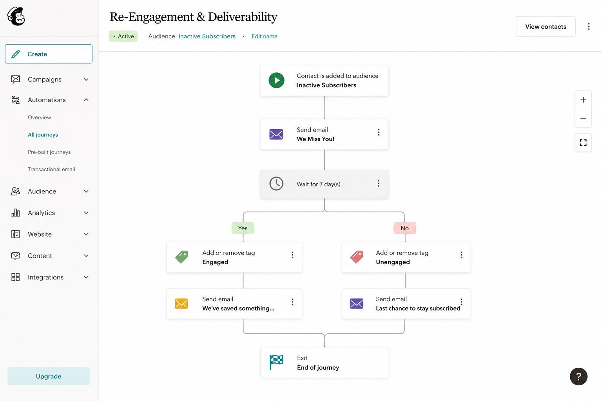
RetentionWin-back emails: how to re-engage customers who stopped buying
Define lapsed customers properly, write a three-step win-back sequence and decide when to let people go to protect deliverability.
Read article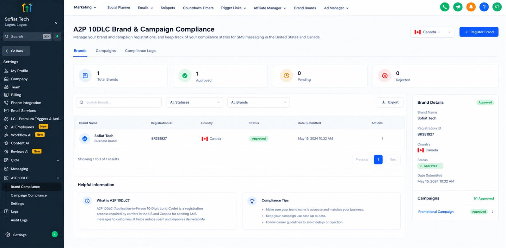
SMS complianceA2P 10DLC registration in GoHighLevel: how to get approved first time
What carriers check, the common rejection reasons and how to write a compliant campaign.
Read articleDeliverabilityEmail list cleaning: how and when to remove contacts safely
Why a smaller list often earns more, which contacts to remove, how to re-permission old lists and how often to clean.
Read article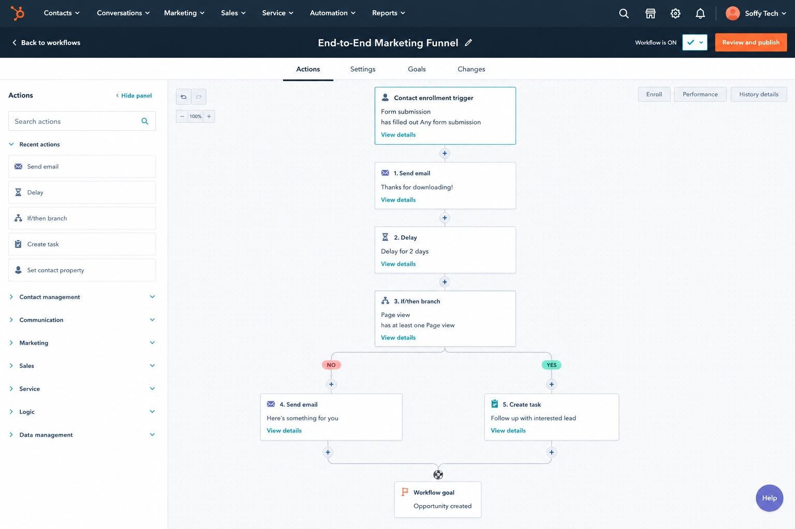
Email marketingThe 7-email lead nurture sequence for coaches and SaaS
A ready-to-adapt nurture blueprint that turns new subscribers into booked calls and trials.
Read article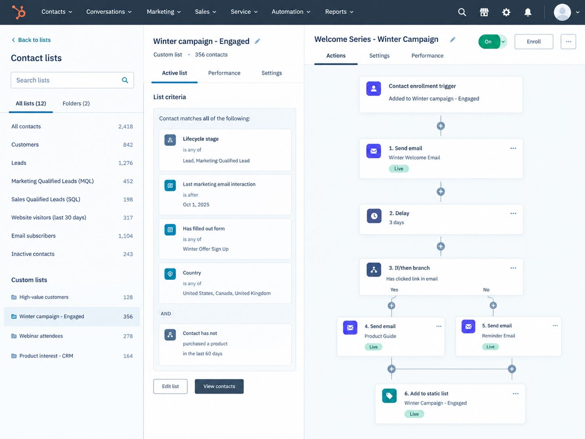
Email marketingEmail segmentation strategies that make every campaign more relevant
Seven practical ways to segment your list, from engagement to purchase behaviour, and how to build segments that update themselves.
Read article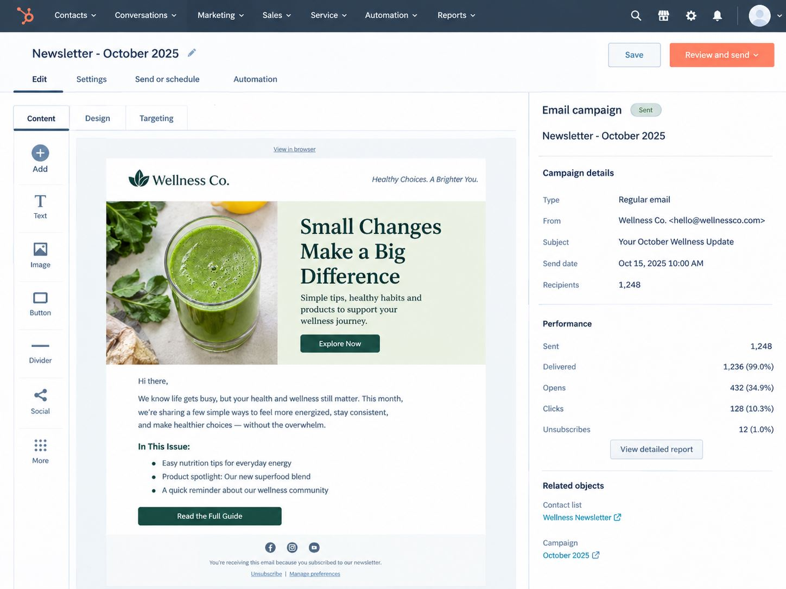
CopywritingEmail subject lines that get opened (without sounding like spam)
Simple, repeatable formulas for subject lines and preview text, what to avoid and how to test properly.
Read article GoHighLevel
GoHighLevelHow to automate Google review requests in GoHighLevel
Build a review request workflow that triggers after every completed job, follows up politely and keeps unhappy feedback private.
Read article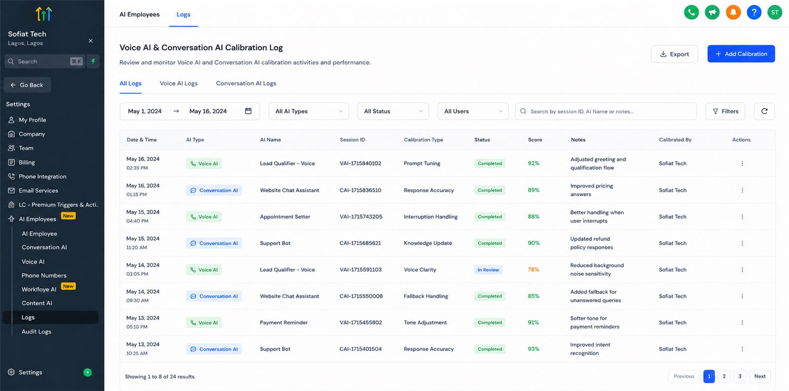
GoHighLevelMissed-call text-back: the simplest automation for local businesses
Why missed calls cost more than you think and how to set up an instant text reply that books the job.
Read article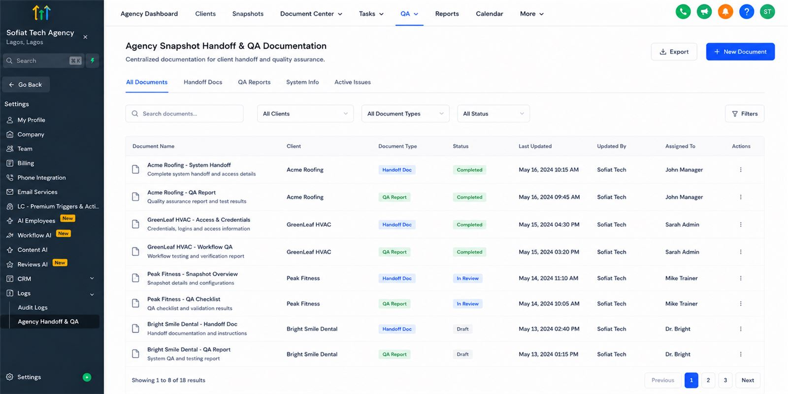
AgenciesGoHighLevel snapshots for agencies: build once, launch clients faster
What to include in a snapshot, how to QA it before every client launch and how to document handoffs so support tickets drop.
Read article HubSpot
HubSpotHubSpot lead scoring: how to tell sales who to call first
A simple, explainable lead scoring model using fit and engagement, plus the workflows that turn scores into action.
Read article7 HubSpot workflows every small business should set up
The automations that save the most time in HubSpot: lead capture, nurture, task creation, deal stages, re-engagement and more.
Read article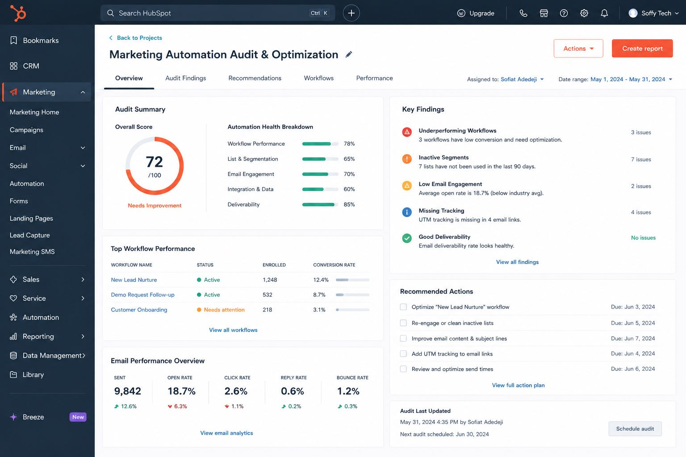
HubSpotHubSpot marketing automation audit: a 20-point checklist
Score your HubSpot portal on workflows, lists, email engagement, integrations and deliverability, then prioritise the fixes that matter.
Read article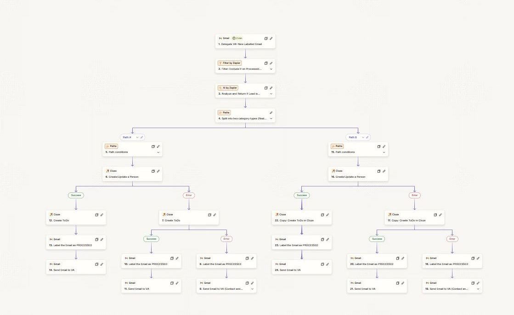
IntegrationsZapier vs Make: which automation tool should you use?
A practical comparison of Zapier and Make for small businesses: ease of use, pricing models, complex logic and when to choose each.
Read article Integrations
Integrations5 Zapier automations every Shopify store can use
Order routing, customer syncing, team notifications, file handling and reporting: Shopify automations that save hours every week.
Read article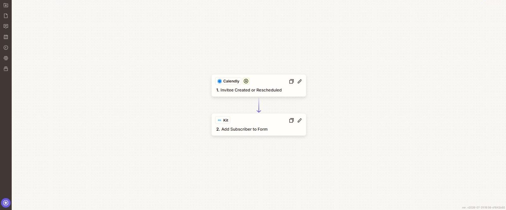
IntegrationsBooking automation: connect Calendly to your CRM and email list
Stop copying names from your calendar. Automatically add bookings to your CRM, tag them, create client folders and start the right follow-up.
Read article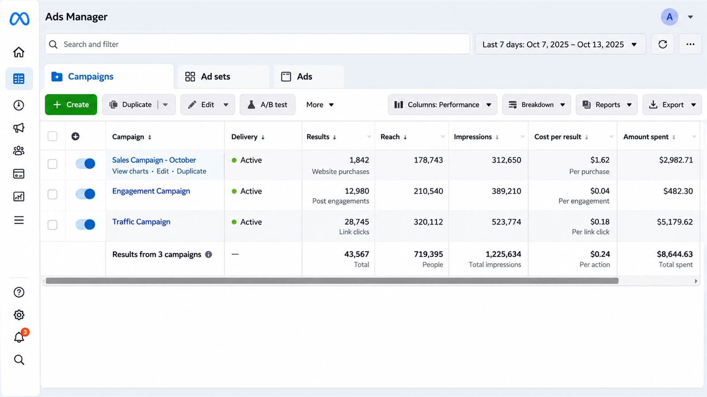
Lead generationFacebook Lead Ads to CRM: respond to leads in seconds, not hours
How to connect Facebook Lead Ads to HubSpot, GoHighLevel or another CRM, map fields correctly and trigger instant follow-up.
Read article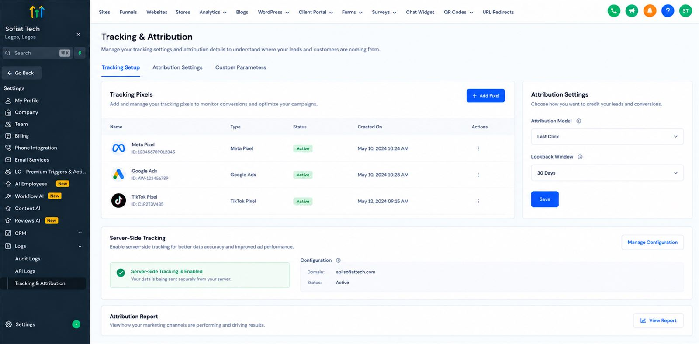
TrackingFirst-click vs last-click attribution and why server-side tracking matters
Understand attribution models, why ad platforms and your CRM disagree, and how server-side tracking recovers lost conversion data.
Read article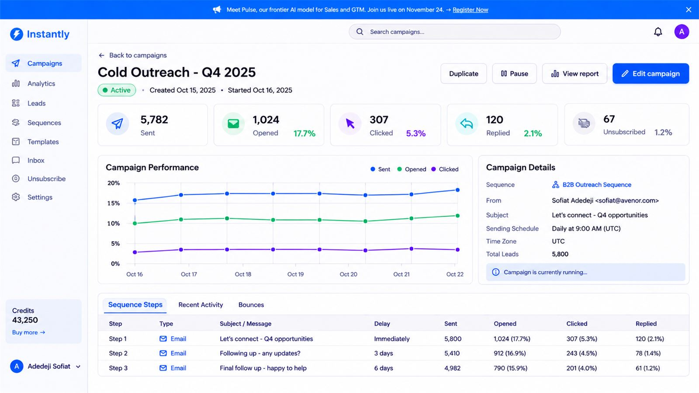
OutboundCold email setup: domains, warm-up and sequences that get replies
How to run B2B cold email without hurting your main domain: secondary domains, inbox warm-up, sending limits and short sequences.
Read article Funnels
FunnelsBuilding a sales funnel in Systeme.io with order bumps and upsells
Plan and build a Systeme.io funnel that raises average order value: sales page, checkout, order bump, one-click upsell and follow-up emails.
Read article Lead generation
Lead generationLead magnet landing pages that convert visitors into subscribers
Choose a lead magnet people actually want, structure the landing page and connect it to a welcome sequence that builds trust.
Read article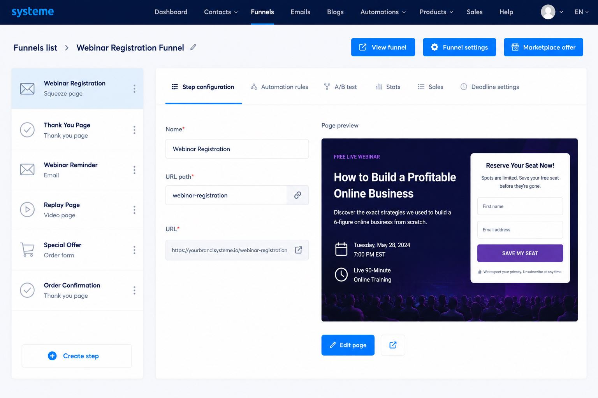
FunnelsThe webinar funnel email sequence: registrations to show-ups to sales
The emails and SMS to send before, during and after a webinar to raise attendance and convert viewers who weren't ready on the day.
Read articleAI voice and chat agents for small businesses: what they can really do
How AI employees in tools like GoHighLevel qualify leads, book appointments and answer questions, plus how to calibrate them so they sound right.
Read article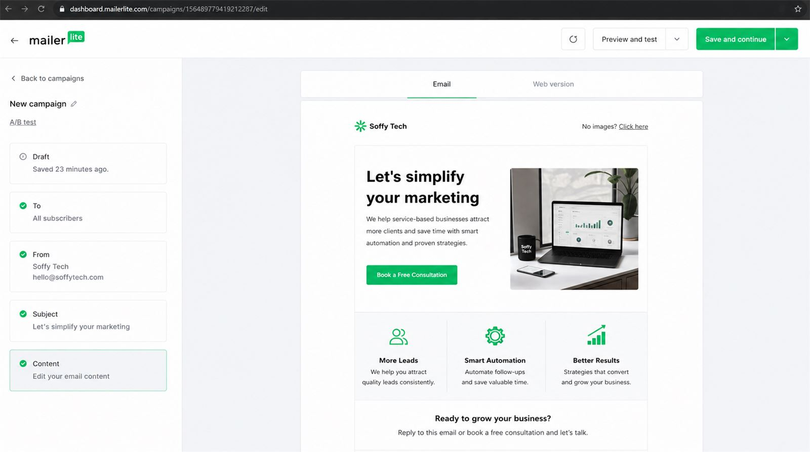
E-commerce emailMailchimp vs Klaviyo: which is right for your online store?
A practical comparison of Mailchimp and Klaviyo for e-commerce: integrations, segmentation, flows, reporting and when to switch.
Read articleNo articles match that search yet. Ask me your question directly.

Rather have it done for you?
Book a free audit and I’ll show you exactly which of these fixes will make the biggest difference to your business.